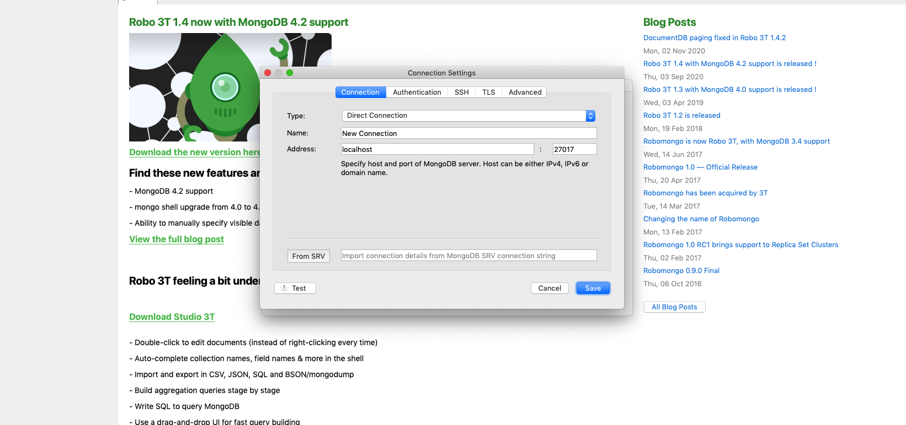

To connect to a remote MongoDB server running on AWS EC2 that only allows local connections you can use an SSH tunnel, also known as SSH port forwarding.
An SSH tunnel creates a connection between a port on your local machine and an address + port on the server, and tunnels the data to the server over SSH on port 22 so it doesn't get blocked by any firewalls or security groups (assuming SSH connections are allowed to the server). After the data reaches the SSH server it gets forwarded to the address + port you specified when you created the SSH tunnel. An important detail here is that the destination address + port are accessed from the context of the server, so localhost or 127.0.0.1 refer to the server machine on the destination side of the tunnel, not your local machine.
Here's an example command that I used to create an SSH tunnel between port 8000 on my local machine and the MongoDB port 27017 on an Ubuntu server running on AWS EC2.
ssh -i ~/my-aws-key.pem -N -f -L 8000:localhost:27017 ubuntu@ec2-54-252-168-106.ap-southeast-2.compute.amazonaws.com
After creating an SSH tunnel with the above command you can connect to the remote mongodb server as if it were running on your local machine on port 8000 like this.
mongo --port 8000
To connect to the remote mongodb server from MongoDB Compass use the following connection string to connect through the SSH tunnel on port 8000.
mongodb://localhost:8000
To close an SSH tunnel that is open in the background you can kill the background process.
Run this command to find out the id of the process for the SSH tunnel (and all other 'ssh' processes').
ps aux | grep ssh
Then run this command to kill the process and close the SSH tunnel.
kill -9 <process id>
For instructions on how to quickly setup a production ready MongoDB + Node.js server on AWS EC2 see Setup Node.js + MongoDB Production Server on Ubuntu. MEAN Stack application to AWS.
Downloads software robomongo of connection alternative.
